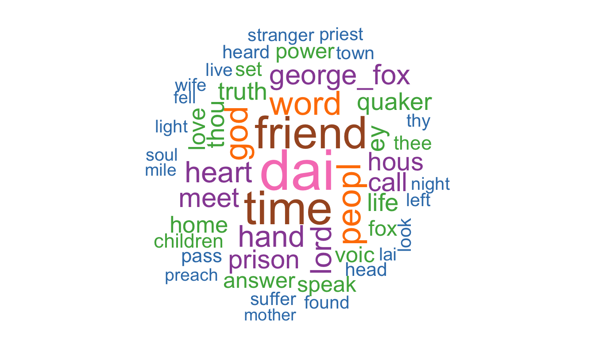
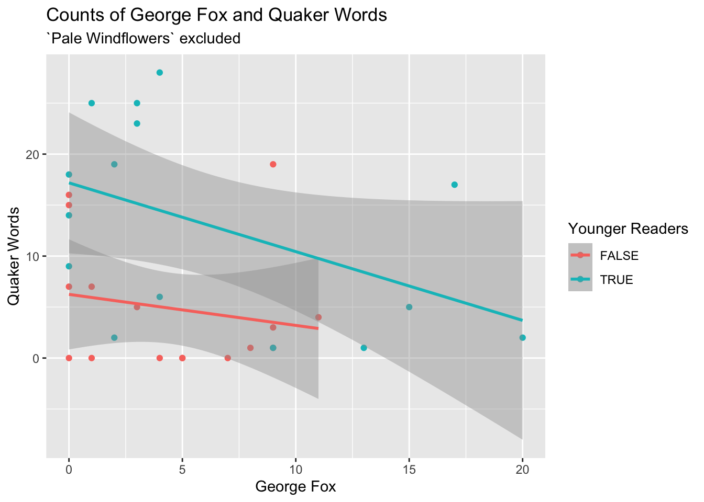
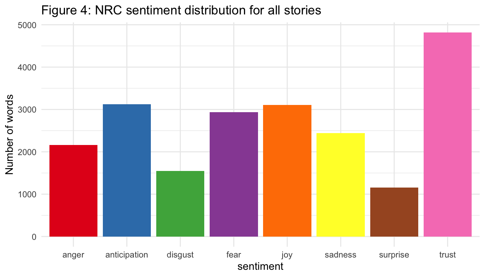
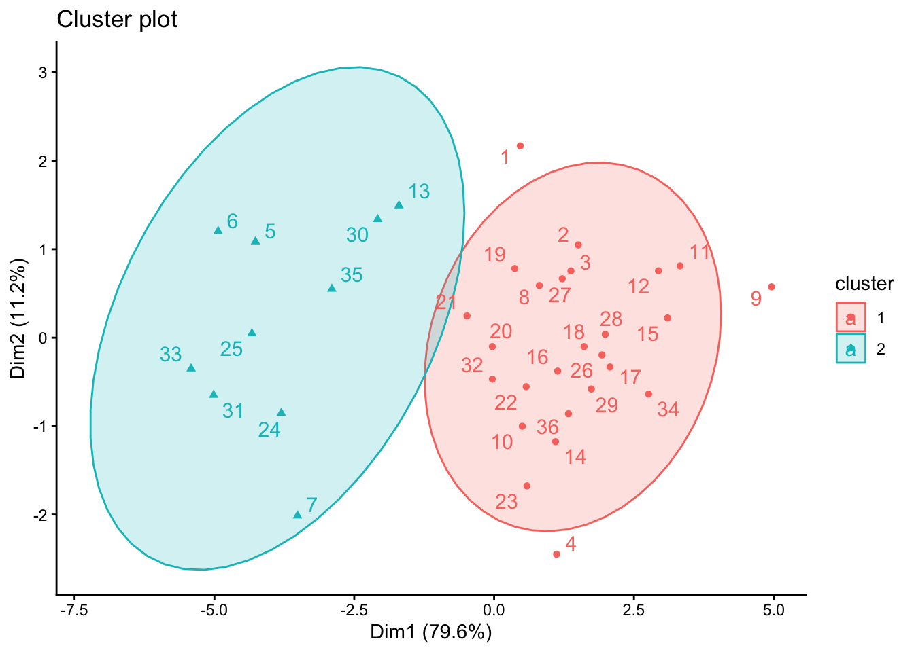
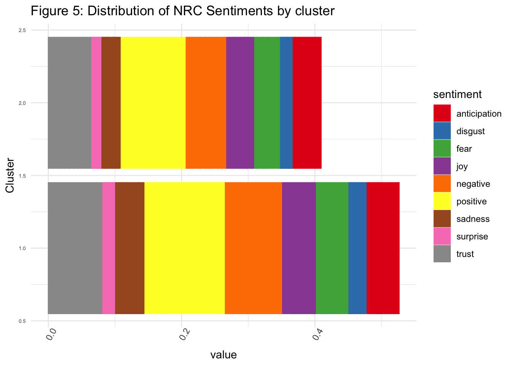
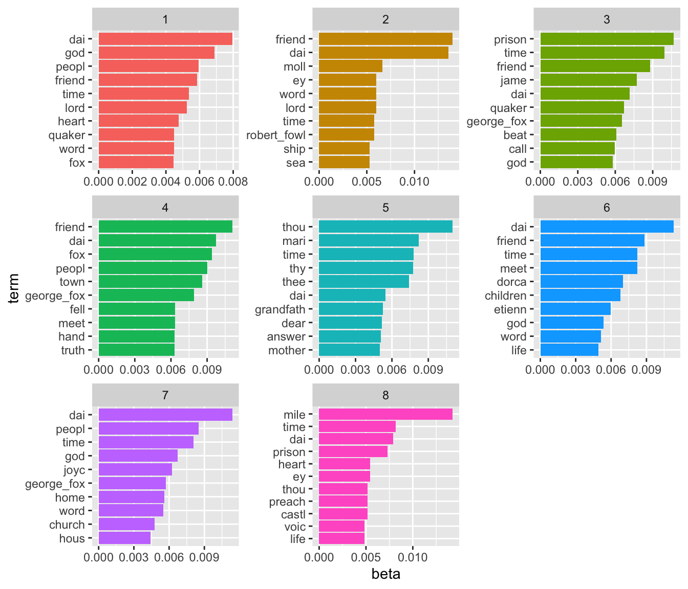

Quaker Stories and the Use of Quake Language
Elin Waring1
1 Department of Sociology, Lehman College

Introduction
The Religious Society of Friends (Quakers) is a Protestant denomination that was founded in England in the 1640s by George Fox. Some of the key features of the religion are its commitment to the idea of that of God in all, pacifism and simplicity. In the United States they are associated with abolitionism.
J.V. Hodgkin was the daughter of a prominent Quaker family in England. She wrote a number of books on Quaker topics and was deeply involved in Quaker life in the United Kingdom. The most famous (still in print today) is A Book of Quaker Saints (1917). The book contains a series of historical stories, mainly about individuals who she describes as “early Quaker saints.” Some of the stories are drawn from the journal of George Fox, the founder of Quakerism.
In addition, there are stories of events involving multiple people, such as “Fierce Feathers” and “Children of Reading Meeting.” These stories are well-known and widely retold among Quakers. These stories are more like stories of miracles than stories of individual saints.
What do these stories tell us about Quaker attitudes?
Can computational text analysis give us any insights?
Objectives
- To identify patterns across the stories.
- Ways in which the stories labelled as appropriate for children might differ from the other stories.
- To describe how these relate to Quaker ideas.
Methods
To analyze these questions, the entire text was obtained from Project Gutenburg. Following initial processing it was tokenized to individual words and these were stemmed using the Porter 2 Snowball algorithm. For common names the separate names were made into a single token, for example “george fox” became “george_fox”. In cases where the same person was referred to by different names (such as “etienne de grellet” being recoded to “stephen_grellet”)
The original book includes extensive front matter, back matter and 32 stories. Each story also included an epigraph. For this analysis only the main story texts were included.
Additional cleaning specifically related to this text included adding a customized set of stop words (for archaic Quaker usage such are thou, thee, thine and hast).
Results
The most common words in the text are shown in Figure 1.
Figure 1 Word Cloud

George Fox appears frequently as do the words God and Lord, but other terms are also more ordinary, although perhaps what might be expected in stories, such as time, day and people. The word friend is common; in this context this has two potential meanings: Quakers are also called Friends and the ordinary meaning of a person someone is friends with, which might be common in stories for children.
George Fox and Quaker words
Although Quaker words is concentrated in a few stories. In particular “Pale Windflowers” uses 118 of them. The story is about the important early Quaker leader William Dewsbury and his granddaughter. Most of the Quaker words are part of dialogues between them or with her mother or aunt.
The limitation that using “george_fox” rather that “fox” means that the presence of mentions of Fox may be undercounted

Overall, there is negative relationship between the frequency of george_fox and the use of Quaker words. The stories for younger readers generally have more uses of these terms, but they seem to be an alternatives. That is, there are not many that have many uses of both.
Sentiment Analysis
Sentiment analysis provides a way to interpret the words used in a body of text. It uses standard lexicons to characterize individual words used.
The NRC lexicon
The NRC lexicon assigns descriptive terms to words; some words are assigned multiple labels. In the book as a whole, “trust” was, by far, the most frequently assigned sentiment. Anticipation, fear and joy formed the second highest group. This approach gives a richer understanding of the content.

Clustering the stories
Cluster analysis is a type of unsupervised machine learning that allows identification of subgroups in data based on the similarity of variables. In this case it is used to identify groups of stories that have similar profiles on the NRC sentiments. For each story, the proportion of words with each of the sentiments are the clustering variables.
In the Quaker stories data there are two clearly defined clusters.

Overall, however, the differences between the clusters are not primarily about the sentiments expressed, but are in the extent to which any sentiment is expressed. Cluster 2 expresses more sentiments than Cluster 1, regardless of what the sentiment is.

| cluster | N of Stories | Quaker Words | George Fox | For Younger |
|---|---|---|---|---|
| 1 | 22 | 17 | 16 | 9 |
| 2 | 10 | 9 | 9 | 7 |
The stories in cluster 2 have a much higher proportion of use of george_fox and Quaker words and are more likely to be for younger readers.
Topic models
Topic modelling is another method of unsupervised machine learning. It attempts to identify common topics that are characterised by use of specific words. The same words can appear in multiple topics and each document (in this case story) can contain multiple topics.

## # A tibble: 8 × 6
## topic N `Cluster 1` `Cluster 2` Younger `Quaker Words`
## <int> <int> <int> <int> <int> <int>
## 1 1 5 3 2 2 3
## 2 2 3 1 2 3 3
## 3 3 2 2 0 1 2
## 4 4 6 5 1 2 5
## 5 5 3 1 2 2 2
## 6 6 6 6 0 4 5
## 7 7 4 3 1 0 3
## 8 8 3 1 2 2 3Next Steps
The next step of this research will be to analyze the epigraphs associated with each story. The similarities and differences with the text of the stories will be explored.
Other collections of Quaker stories that are not always presented as stories of saints and may be from different time periods will be analyzed and compared to the Quaker Saints.
Conclusion
Quantitative analysis of the text provides a distinctive way of analyzing the Quaker stories. This analysis may also give us insights into the kinds of stories that might have been thought of as appropriate for children of different ages. In 1935 a collection The Children’s Story Caravan and in 1962 an abridged version Friendly Story Caravan with just 18 stories published. A 1990 edition contained just 18 stories. Many of the same incidents and people are included in these later works, but some are excluded. Overall the idea of what kind of stories would be most appropriate for children seemed to change dramatically over those 80 years. This may reflect societal change in ideas about children.
Frost (1971) discussed the Quaker practice of treating children as “little adults” and its theological basis. Although his focus was on an earlier period, this may be reflected in the creation of a book that is not specifically for children. However, Hodgkin’s designation of some stories as more suitable for children under age 9 may reflect some mixed feelings about this in the early twentieth century. Compton’s work, which is much more recent, describes one child recalling being very upset about one particular story and

Selected References
Crompton, Margaret. n.d. “Spiritual Equality in the Experience of Quaker Children.”
Frost, Jerry W. 1971. “As The Twig Is Bent: Quaker Ideas of Childhood.” Quaker History 60(2):67–87.
Hodgkin, L. V. (Lucy Violet). 1917. “A Book of Quaker Saints.” Https://Www.Gutenberg.Org/Files/19605/19605-h/19605-h.Htm. Retrieved May 14, 2024